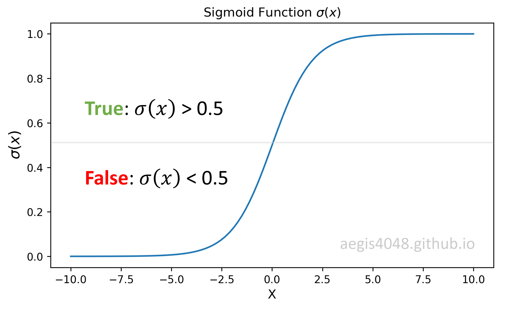

Optimize Computational Efficiency of Skip-Gram with Negative Sampling
Category > Natural Language Processing
May 26, 2019The code snippet assumes Anaconda 5.2.0 version of Python virtual environment
Acknowledgement
The materials on this post are based the on five NLP papers, Distributed Representations of Words and Phrases and their Compositionality (Mikolov et al., 2013), word2vec Parameter Learning Explained (Rong, 2014), Distributed Negative Sampling for Word Embeddings (Stergiou et al., 2017), Incremental Skip-gram Model with Negative Sampling (Kaji and Kobayashi, 2017), and word2vec Explained: Deriving Mikolov et al.’s Negative-Sampling Word-Embedding Method (Goldberg and Levy, 2014).
Review on Word2Vec Skip-Gram¶
In my previous post, I illustrated the neural network structure of Skip-Gram Word2Vec model that represents words in a vector space.

Figure 1: Neural network structure of Skip-Gram
I also derived the cost function of Skip-Gram in Derivation of Cost Function:
where $p(w_{t+j} \mid w_t ; \, \theta)$ is a probability of observing $w_{t+j}$ given $w_{t}$ with parameters $\theta$. In vanilla Skip-Gram, the probability is computed with softmax. I also noted that stochastic gradient descent (SGD) is used to mitigate computational burden — the size of $T$ in $\frac{1}{T} \sum^T_{t=1}$ can be billions or more in NLP applications. The new cost function using SGD is:
where $T$ is the size of training samples, $C$ is the window size, $V$ is the size of unique vocab in the corpus, and $W_{input}$, $W_{output}$ and $h$ are illustrated in figure 1.
Review on Softmax¶
Softmax is a multinomial regression classifier. It means that it classifies multiple labels, such as predicting if an hand-written digit is $0,\,1,\,2,\,...\,8\,$ or $9$. In case of binary classification (True or False), such as classifying fraud or not-fraud in bank transactions, binomial regression classifier called Sigmoid function is used.
In eq (2), the fraction inside the summation of log yields the probability distribution of all $V$-vocabs in the corpus, given the input word. In statistics, the conditional probability of $A$ given $B$ is denoted as $p(A|B)$. In Skip-Gram, we use the notation, $p(w_{context}| w_{center})$, to denote the conditional probability of observing a context word given a center word. It is obtained by using the softmax function:
Exponentiation ensures that the transformed values are positive, and the normalization factor in the denominator ensures that the values have a range of $[0, 1)$ and their sum equals $1$.
Figure 2: softmax function transformation
The probability is computed $V$ times using eq (3) to obtain a conditional probability distribution of observing all $V$-unique vocabs in the corpus, given a center word ($w^{(t)}$).
Softmax is computationally very expensive¶
There is an issue with the vanilla Skip-Gram — softmax is computationally very expensive, as it requires scanning through the entire output embedding matrix ($W_{output}$) to compute the probability distribution of all $V$ words, where $V$ can be millions or more.
Figure 3: Algorithm complexity of vanilla Skip-Gram
Furtheremore, the normalization factor in the denominator also requires $V$ iterations. In mathematical context, the normalization factor needs to be computed for each probability p($w_{context}| w_{center}$), making the alogrithm complexity = $O(V \times V)$. However, when implemented on code, the normalization factor is computed only once and cached as a Python variable, making the alogrithm complexity = $O(V + V) \approx O(V)$. This is possible because normalization factor is the same for all words.
Due to this computational inefficiency, softmax is not used in most implementaions of Skip-Gram. Instead we use an alternative called negative sampling with sigmoid function, which rephrases the problem into a set of independent binary classification task of algorithm complexity = $O(K \, + \, 1)$, where $K$ typically has a range of $[5, 20]$.
Skip-Gram Negative Sampling¶
In Skip-Gram, assuming stochastic gradient descent, weight marices in the neural network are updated for each training sample to correctly predict output. Let's assume that the training corpus has 10,000 unique vocabs ($V$ = 10000) and the hidden layer is 300-dimensional ($N$ = 300). This means that there are 3,000,000 neurons in the output weight matrix ($W_{output}$) that need to be updated for each training sample (Notes: for the input weight matrix ($W_{input}$), only 300 neurons are updated for each training sample. This is illustrated in figure 18 of my previous post.) Since the size of the training corpus ($T$) is very large, updating 3M neurons for each training sample is unrealistic in terms of computational efficiency. Negative sampling addresses this issue by updating only a small fraction of the output weight neurons for each training sample.
In negative sampling, $K$ negative samples are randomly drawn from a noise distribution. $K$ is a hyper-parameter that can be empirically tuned, with a typical range of $[5,\, 20]$. For each training sample (positive pair: $w$ and $c_{pos}$), you randomly draw $K$ number of negative samples from a noise distribution $P_n(w)$, and the model will update $(K+1) \times N$ neurons in the output weight matrix ($W_{output}$). $N$ is the dimension of the hidden layer ($h$), or the size of a word vector. $+1$ accounts for a positive sample.
With the above assumption, if you set K=9, the model will update $(9 + 1) \times 300 = 3000$ neurons, which is only 0.1% of the 3M neurons in $W_{output}$. This is computationally much cheaper than the original Skip-Gram, and yet maintains a good quality of word vectors.
The below figure has 3-dimensional hidden layer ($N=3$), 11 vocabs ($V=11$), and 3 negative samples ($K=3$).
Figure 4: Skip-Gram model structure
Notes: Choice of $K$
The paper (Mikolov et al., 2013) says that K=2 ~ 5 works for large data sets, and K=5 ~ 20 for small data sets.
How does negative sampling work?¶
With negative sampling, word vectors are no longer learned by predicting context words of a center word. Instead of using softmax to compute the $V$-dimensional probability distribution of observing an output word given an input word, $p(w_O|w_I)$, the model uses sigmoid function to learn to differentiate the actual context words (positive) from randomly drawn words (negative) from the noise distribution $P_n(w)$.
Assume that the center word is "regression". It is likely to observe "regression" + {"logistic", "machine", "sigmoid", "supervised", "neural"} pairs, but it is unlikely to observe "regression" + {"zebra", "pimples", "Gangnam-Style", "toothpaste", "idiot"}. The model maximizes the probability $p(D=1|w,c_{pos})$ of observing positive pairs, while minimizing the probability $p(D=1|w,c_{neg})$ of observing negative pairs. The idea is that if the model can distinguish between the likely (positive) pairs vs unlikely (negative) pairs, good word vectors will be learned.
Figure 5: Binomial classification of negative sampling
Negative sampling converts multi-classification task into binary-classification task. The new objective is to predict, for any given word-context pair ($w,\,c$), whether the word ($c$) is in the context window of the the center word ($w$) or not. Since the goal is to identify a given word as True (positive, $D=1$) or False (negative, $D=0$), we use sigmoid function instead of softmax function. The probability of a word ($c$) appearing within the context of the center word ($w$) can be defined as the following:
where $c$ is the word you want to know whether it came from the context window or the noise distribution. $w$ is the input (center) word, and $\theta$ is the weight matrix passed into the model. Note that $w$ is equivalent to the hidden layer ($h$). $\bar{c}_{output_{(j)}}$ is the word vector from the output weight matrix ($W_{output}$) of figure 1.
Eq (5) computes the probability that the given word ($c$) is a positive word ($D=1$). It only needs to be applied $K + 1$ times instead of $V$ times for every word in the vocabulary, because $\bar{c}_{output_{(j)}}$ comes from the concatenation of a true context word ($c_{pos}$) and $K$ negative words ($\bar{W}_{neg} = \{ \bar{c}_{neg, j}|j=1,\cdots,K \}$):
This probability is computed $K + 1$ times to obtain a probability distribution of a true context word and $K$ negative samples:
Compare this equation with eq (4) — you will notice that eq (7) is computationally much cheaper because $K$ is between 5 ~ 20, whereas $V$ can be millions. Moreover, no extra iterations are necessary to compute the normalization factor in the denominator of eq (4), because sigmoid function is a binary regression classifier. The algorithm complexity for probability distribution of vanilla Skip-Gram is $O(V)$, whereas negative sampling's is $O(K+1)$. This shows why negative sampling saves a significant amount of computational cost per iteration.
Notes: Sigmoid function $\sigma(x)$
Sigmoid function is used for two-class logistic regression.
It is used to classify if a given sample is True or False based on the computed probability. The sample is classified as True if the value is greater then 0.5, and vice versa. For example, if you want to classify if a certain bank transaction is fraud or not, you will use sigmoid for binary classification.
If you are working on a multi-class task, such as hand-written digit classification, you will use softmax regression classifier.
Figure 6: Choice of negative samples (Text source: Petrowiki)
For the purpose of illustration, consider the above paragraphs. Assume that our center word ($w$) is drilling, window size is $3$, and the number of negative samples ($K$) is $5$. With the window size of $3$, the contexts words are: "engineer", "traditionally", "designs", "fluids", "with", and "two". These context words are considered as positive labels ($D = 1$). Our current context word ($c_{pos}$) is engineer. We also need negative words. We randomly pick $5$-words from the noise distribution $P_n(w)$ of the corpus for each context word, and consider them as negative samples ($D = 0$). For the current context word, engineer, the 5 randomly drawn negative words ($c_{neg}$) are: "minimized", "primary", "concerns", "led", and "page".
The idea of negative sampling is that it is more likely to observe positive word pairs ($w$, $c_{pos}$) together than negative word pairs ($w$, $c_{neg}$) together in the corpus. The model attempts to maximize the the probability of observing positive pairs $p(c_{pos}|w) \rightarrow 1$ and minimize the probability of observing negative pairs $p(c_{neg}|w) \rightarrow 0$ simultaneously by iterating through the training samples and updating the weights ($\theta$). Note that the sum of the probability distribution obtained by sigmoid function (eq (7)) does not need to equal $1$, unlike softmax (eq (4)).
Figure 7: maximizing postive pairs and minimizing negative pairs
By the time the output probability distribution is nearly one-hot-encoded as in $iter = 4$ of the above figure, weight matrices $\theta$ are optimized and good word vectors are learned. This optimization is achieved by maximizing the dot product of positive pairs ($\bar{c}_{pos}\cdot \bar{w}$) and minimizing the dot product of negative pairs ($c_{neg}\cdot w$) in eq (18).
Notes: Drawing random negative samples
For each positive word-context pair ($w,\,c_{pos}$), $K$ new negative samples are randomly drawn from a noise distribution. In figure 6, there are $6$ positive context words ("engineer", "traditionally", "designs", "fluids", "with", and "two") for one center word ("drilling"), and $K$ is $5$. This means that a total of $6 \times 5 = 30$ word vectors are updated for each center word $w$.
What is a positive word $c_{pos}$?¶
Words that actually appear within the context window of the center word ($w$). After the model is optimized, the probability computed with eq (5) for positive words $c_{pos}$ will output $\approx$ 1 as shown in fig 7. A word vector of a center word ($w$) will be more similar to a word vector of positive word ($c_{pos}$) than of randomly drawn negative words ($c_{neg}$). This is because words that frequently appear together show strong correlation with each other. Therefore, once the model is optimized: $p(D=1|w,c_{pos})\approx1$.
What is a negative word $c_{neg}$?¶
Words that are randomly drawn from a noise distribution $P_n(w)$. After the model is optimized, the probability computed with eq (5) for negative words $c_{neg}$ will output $\approx$ 0 as shown in fig 7. When training an Word2Vec model, the vocab size ($V$) easily exceeds tens of thousands. When 5 ~ 20 negative samples are randomly drawn among the vocabs, it is unlikely to observe the random word with a center word together in the corpus. Therefore, once the model is optimized: $p(D=1|w,c_{neg})\approx0$.
What is a noise distribution $P_n(w)$?¶
Imagine a distribution of words based on how many times each word appeared in a corpus, denoted as $U(w)$ (this is called unigram distribution). For each word $w$, divide the number of times it appeared in a corpus by a normalization factor $Z$ so that the distribution becomes a probability distribution of range $[0, 1)$ and sums up to $1$. Raise the normalized distribution to the power of $\alpha$ so that the distribution is "smoothed-out". Then this becomes your noise distribution $P_n(w)$ — normalized frequency distribution of words raised to the power of $\alpha$. Mathematically, it can be expressed as:
Raising the unigram distribution $U(w)$ to the power of $\alpha$ has an effect of smoothing out the distribution. It attempts to combat the imbalance between common words and rare words by decreasing the probability of drawing common words, and increasing the probability drawing rare words.
$\alpha$ is a hyper-parameter that can be empirically tuned. The authors of the original Word2Vec paper claims that the unigram distribution $U(w)$ raised to the $3/4$rd power (i.e., $U(w)^{3/4}/Z$) yielded the best result.

Figure 8: Effect of raising power of unigram distribution $U(w)$
Notes: Incremental noise distribution
Noise distribution $P_n(w)$ needs to be pre-computed by iterating through the entire corpus to obtain word frequency $U(w)$ and normalization factor $Z$ of the distribution. If an additional training data is added to the corpus, $P_n(w)$ needs to be computed all over again. To address this problem, a simple incremental extension of negative sampling was provided in this paper (Kaji and Kobayashi, 2017).
How are negative samples drawn?¶
$K$-negative samples are randomly drawn from a noise distribution $P_n(w)$. The noise distribution is generated with eq (8) and the random samples are drawn with np.random.choice.
import numpy as np
unig_dist = {'apple': 0.023, 'bee': 0.12, 'desk': 0.34, 'chair': 0.517}
sum(unig_dist.values())
alpha = 3 / 4
noise_dist = {key: val ** alpha for key, val in unig_dist.items()}
Z = sum(noise_dist.values())
noise_dist_normalized = {key: val / Z for key, val in noise_dist.items()}
noise_dist_normalized
sum(noise_dist_normalized.values())
In the initial unigram distribution, chair appeared the most in the corpus, and had 0.517 chance of being drawn as a negative sample. However, the unigram distribution is raised to the power of $3/4$rd to combat the imbalance between common vs rare words, as shown in figure 8. After unig_dist was raised to the power of alpha = 3/4 and normalized, chair now has 0.463 chance of being drawn.
On the other hand, apple had the lowest probability (0.023) of being drawn. After the transformation, it now has a bit higher probability (0.049) of being drawn. The imbalance between the most common word (chair) and the least common word (apple) was mitigated.
Once the noise distribution (noise_dist_normalized) is generated, you randomly draw $K$ negative samples according to each word's probability.
K = 10
np.random.choice(list(noise_dist_normalized.keys()), size=K, p=list(noise_dist_normalized.values()))
Derivation of Cost Function in Negative Sampling¶
The derivations written here are based on the work of word2vec Explained: Deriving Mikolov et al.’s Negative-Sampling Word-Embedding Method (Goldberg and Levy, 2014).
Consider a pair ($w,\,c$) of center word and its context. Did this pair come from the context window or the noise distribution? Let $p(D=1|w,c)$ be the probability that ($w,\,c$) is observed in the true corpus, and $p(D=0|w,c) = 1 - p(D=1|w,c)$ the probability that ($w,\,c$) is non-observed. There are parameters $\theta$ controlling the probability distribution: $p(D=1|w,c;\theta)$.
Negative sampling attempts to optimize the parameters $\theta$ by maximizing the probability of observing positive pairs ($w,\,c_{pos}$) while minimizing the probability of observing negative pairs ($w,\,c_{neg}$). For each positive pair, the model randomly draws $K$ negative words $W_{neg} = \{ c_{neg, j}|j=1,\cdots,K \}$. Our objective function is then:
Notes: Probability Product
In statistics, probability of observing $C$ multiple events at the same time is computed by the product of each event's probability.
This can be shortened with a product notation:
It is a common practice in machine learning to take a natural log to the objective function to simplify derivations. This does not affect the optimized weights ($\theta$) because natural log is a monotonically increasing function. It ensures that the maximum value of the original probability function occurs at the same point as the log probability function. Therefore:
Using the property of logs, the objective function can be simplified:
The binomial probability $p(D=1|w,c;\theta)$ can be replaced with eq (5):
Using the definition of sigmoid function $\sigma(x)=\frac{1}{1+exp(-x)}$:
According to Mikolov, eq (16) replaces every $log \, p(w_O|w_I)$ in the vanilla Skip-Gram cost function defined in eq (1). Then, the cost function we want to minimize becomes:
However, when implemented in codes, batch gradient descent (making one update after iterating through the entire $T$ corpus) is almost never used due to its high computational cost. Instead, we use stochastic gradient descent. Also, for negative sampling, gradients are calculated and weights are updated for each positive training pairs ($w,\, c_{pos}$). In the other words, one update for each word within the context window of a center word $w$. This is shown below. The new cost function is then:
Note that $w$ is a word vector for an input word, and that it is equivalent to a hidden layer ($w = h$). For clarification:
Notes: Notations used in different papers
Different papers use different notations. In word2vec Parameter Learning Explained (Rong, 2014):
$$J(\theta; w_I, w_O) = - log \, \sigma(v^{'}_{w_{O}} \cdot h) - \sum_{w_j \in W_{neg}} log \, \sigma(-v^{'}_{w_{j}} \cdot h)$$
where $w_I$ is the input (center) word in the corpus. $w_{O}$ is a word found in the context window of $w_I$ and is a positive word. $v^{'}$ is a word vector in the output weight matrix ($v^{'} \in W_{output}$), $w_j$ is a randomly drawn negative word from the noise distribution, and $v^{'}_{w_{j}}$ is a $j$-th word vector in $W_{output}$ that corresponds to the negative word $w_j$. $h$ is a hidden layer.
In the original Word2Vec paper, Distributed Representations of Words and Phrases and their Compositionality (Mikolov et al., 2013):
$$J(\theta; w_I, w_O) = - log \, \sigma(v^{'}_{w_{O}} \top v_I) - \sum^k_{i=1} \mathbb{E}_{w_{i} \sim P_n(w)}\big[ log \, \sigma(-v^{'}_{w_{i}} \top v_I) \big]$$
$k$ is the number of negative samples and $w_i$ is an $i$-th negative word drawn from the noise distribution $P_n(w)$. $v_{w_{I}}$ is a word vector in the input weight matrix $W_{input}$ for the input word $w_I$ and is equivalent to the hidden layer $h$. These are all equivalent to eq (19).
Derivation of gradients¶
The goal of any machine learning model is to find the optimal values of a weight matrix ($\theta$) to minimize prediction error. A general update equation for weight matrix looks like the following:
$\theta$ is a parameter that needs to be optimized, and $\eta$ is a learning rate. In negative sampling, we take the derivative to the cost function $J(\theta; w, c_{pos})$ defined in eq (19) with respect to $\theta$. Note that the derivative of a sigmoid function is $\frac{\partial \sigma}{\partial x} = \sigma(x)(1–\sigma(x))$.
Since the parameter $\theta$ is a concatenation of the input and output weight matrix $[W_{input} \quad W_{output}]$, the cost function needs to be differentiated with respect to the both matrices — $[\frac{\partial J}{\partial W_{input}} \quad \frac{\partial J}{\partial W_{output}}]$.
Notes: Clarification on notation
$\bar{c}$ represents a word vector in the output weight matrix ($\bar{c} \in W_{output}$) for a context word. The context word can be a positive word ($c_{pos}$) from a context window or a negative word ($c_{neg} \in W_{neg}$) from a noise distribution.
$h$ is a hidden layer. Recall that the hidden layer is essentially a word vector for the input word that is looked up from the input weight matrix $W_{input}$.
Gradients with respect to output weight matrix $\frac{\partial J}{\partial W_{output}}$
With negative sampling, we do not update the entire output weight matrix $W_{output}$, but only a fraction of it. We update $K + 1$ word vectors in the output weight matrix — $\bar{c}_{pos}$, $\bar{c}_{neg,1},\,...\,\bar{c}_{neg,K}$. We take partial derivatives to the cost function defined in eq (19) with respect to positive words and negative words. This can be done by replacing $\theta$ in eq (21) with $\bar{c}_{pos}$ and $\bar{c}_{neg}$ each.
The update equations are then:
The gradients for positive and negative words can be merged for brevity:
where $t_j = 1$ for positive words ($c_j = c_{pos}$) and $t_j = 0$ for negative words ($c_j = c_{neg} \in W_{neg}$). $\bar{c}_{j}$ is the $j$-th word vector in the output word matrix ($\bar{c}_j \in W_{output}$). For each positive pairs ($w$, $c_{pos}$), eq (26) is applied to $K + 1$ word vectors in $W_{output}$ as shown in figure 4.
Notes: Prediction Error
In eq (26), $\sigma(\bar{c}_{j} \cdot h) - t_j$ is called a prediction error. Recall that negative sampling attempts to maximize the the probability of observing positive pairs $p(c_{pos}|w) \rightarrow 1$ while minimizing the probability of observing negative pairs $p(c_{neg}|w) \rightarrow 0$. If good word vectors are learned, $\sigma(\bar{c}_{pos}\cdot h) \approx 1$ for positive pairs, and $\sigma(\bar{c}_{neg}\cdot h) \approx 0$ for negative pairs as shown in figure 7.
The prediction error will gradually approach zero $\sigma(\bar{c}_{pos}\cdot h) - t_j \approx 0$, as the model iterates through the training samples (positive pairs) and optimizes the weights.
Gradients with respect to input weight matrix $\frac{\partial J}{\partial W_{input}}$
Just like vanilla Skip-Gram, only one word vector that corresponds to the input word $w$ in $W_{input}$ is updated with negative sampling. This is because the input layer is an one-hot-encoded vector (however, the equation for the gradient descent is different.) Therefore, taking the derivative for the input weight matrix is equivalent to taking the derivative to the hidden layer ($\frac{\partial J}{\partial W_{input}} = \frac{\partial J}{\partial h}$). We replace $\theta$ in eq (21) with $h$, and differentiate it:
Same as eq (26), $t_j = 1$ for positive words ($c_j = c_{pos}$) and $t_j = 0$ for negative words ($c_j = c_{neg} \in W_{neg}$). The update equation is then:
Recall that $w$ is a word vector in the input weight matrix ($\bar{w} \in W_{input}$) and $\bar{c}_j$ is a $j$-th word vector in the output weight matrix ($\bar{c}_j \in W_{output}$).
Negative Sampling Algorithm¶
For each positive word-context pair ($w, c_{pos}$), $1$ word vector that corresponds to the center word ($w$) is updated in the input weight matrix $W_{input}$ as shown in figure 15. In the output weight matrix $W_{output}$, $1+K$ word vectors that correspond to the positive and negative words ($\{\bar{c}_{pos}\} \cup \bar{W}_{neg} \in \mathbb{R}^{1+K} $) are updated as shown in figure 4.
Since Skip-Gram uses SGD to reduce computational cost, negative sampling also uses SGD too. Then, the training for Skip-Gram negative sampling has the following algorithm structure:
Algorithm 1: Skip-Gram Negative Sampling
P_nw = # generate noise distribution
for word in corpus:
for context in context_window:
# draw K negative samples from P_nw
W_neg = np.random.choice(Pn_w.keys(), size=K, p=Pn_w.values())
# compute gradients. w is a input word vector = hidden layer
grad_V_output_pos = (sigmoid(c_pos * h) - 1) * w
grad_V_input = (sigmoid(c_pos * h) - 1) * c_pos
grad_V_output_neg_list = []
for c_neg in W_neg:
grad_V_output_neg_list.append(sigmoid(c_neg * h) * h)
grad_V_input += sigmoid(c_neg * h) * c_neg
# use SGD to update w, c_pos, and c_neg_1, ... , c_neg_K
V_output_pos = V_output_pos - alpha * grad_V_output_pos
V_input = V_input - alpha * grad_V_input
for grad_V_output_neg in grad_V_output_neg_list:
V_output_neg = V_output_neg - alpha * grad_V_output_neg
The Python implementation of negative sampling here is based on the interpretation of Algorithm 1 SGNS Word2Vec in Distributed Negative Sampling for Word Embeddings (Stergiou et al., 2017).
In vanilla Skip-Gram, one update is made for the entire weight matrices $[W_{input} \quad W_{output}]$ for each input word. Each update involves summing up dot products for all context words within the context window of size $C$ as shown in eq (20) and eq (21) of my previous post.
In negative sampling, $C$ updates are made for a fraction of the weights for each input word. This is because negative sampling treats each positive pair ($w$, $c_{pos}$) as one training sample, whereas vanilla Skip-Gram treats a center word ($w$) and its $C$ neighboring context words ($c_{pos, 1}$, $...$, $c_{pos,C}$) all together as one training sample for SGD.
Numerical Demonstration¶
For the ease of illustration, screenshots from Excel will be used to demonstrate the concept of updating weight matrices through forward and backward propagations.
Description of the Corpus
Assume that the training corpus is the entire text in the book, "A Song of Ice and Fire." Unlike the simple one-sentence training corpus used in my previous post, the training corpus needs to be much bigger to illustrate negative sampling, because we need to randomly draw negative samples that are unlikely to be observed in a pair with a center word. The sentence that has the current center word is "Ned Stark is the most honorable man".
Center (input) word is Ned, and window size is $C = 2$, making Stark and is context words. Number of negative samples drawn from the noise distribution for each positive pair is $K = 3$.
Figure 9: Training corpus for negative sampling
For your information, Ned Stark is a fictional character from the book, A Song of Ice and Fire. The book also has a TV show adaptation, known as the Game of Thrones (GoT). Ned Stark is a noble lord of his land and has a reputation of being the most honorable man in the kingdom.
So here's the idea. The center word Ned will be observed in a pair with context words (postive) like Stark, because it is his last name. The same thing goes for is too, because is is a verb tense used to describe a singular object.
However, Ned most likely won't be observed in a pair with random words (negative) like pimples, zebra, donkey within the book. If the model can differentiate between positive pairs and negative pairs as shown in figure 5, good word vectors will be learned.
1. Positive word pair: (Ned, Stark)¶
Recall that in negative sampling, one update is made for each of the positive training pairs. This means that $C$ weight updates are made for each input (center) word, where $C$ is the window size.
Our current positive word pair is (Ned, Stark). For the current positive pair, we randomly draw $K=3$ negative words from the noise distribution: pimples, zebra, idiot
Forward Propagation: Computing hidden (projection) layer
Hidden layer ($h$) is looked up from $W_{input}$ by multiplying the one-hot-encoded input vector with the input weight matrix $W_{input}$.
Figure 10: Computing hidden (projection) layer
Forward Propagation: Sigmoid output layer
Output layer is a probability distribution of positive and negative words ($c_{pos} \cup W_{neg}$), given a center word ($w$). It is computed with eq (7). Recall that sigmoid function has $\sigma(x) = \frac{1}{1+exp(-x)}$.
Figure 11: Sigmoid output layer
Backward Propagation: Prediction Error
The details about the prediction error is described above. Since our current positive word is Stark, $t_j = 1$ for Stark and $t_j=0$ for other negative words (pimples, zebra, idiot).
Figure 12: Prediction errors of positive and negative words
Backward Propagation: Computing $\nabla W_{input}$
Gradients of input weight matrix ($\frac{\partial J}{\partial W_{input}}$) are computed using eq (28). Just like vanilla Skip-Gram, only the word vector in the input weight matrix $W_{input}$ that corresponds to the input (center) word $w$ is updated.
Figure 13: Computing input weight matrix gradient $\nabla W_{input}$
Backward Propagation: Computing $\nabla W_{output}$
With negative sampling, only a fraction of word vectors in the output weight matrix $W_{output}$ is updated. Gradients for $K + 1$ word vectors for positive and negative words in the $W_{output}$ are computed using eq (22) and eq (23). Recall that $K$ is the number of negative samples drawn from a noise distribution, and that $K = 3$ in our example.
Figure 14: Computing output weight matrix gradient $\nabla W_{output}$
Backward Propagation: Updating Weight matrices
Input and output weight matrices ($[W_{input} \quad W_{output}]$) are updated using eq (26) and eq (29).
Figure 15: Updating $W_{input}$
Figure 16: Updating $W_{output}$
2. Positive word pair: (Ned, is)¶
The center word Ned has two context words: Stark and is. This means that we have two positive pairs = two updates to make. Since we already update the matrices $[W_{input} \quad W_{output}]$ using (Ned, Stark), we will use (Ned, is) to update weight matrices this time.
In negative sampling, we draw new $K$ negative words for each positive pairs. Assume that we randomly drew coins, donkey, and machine as our negative words this time.
Forward Propagation: Computing hidden (projection) layer
Figure 17: Computing hidden (projection) layer
Forward Propagation: Sigmoid output layer

Figure 18 Sigmoid output layer
Backward Propagation: Prediction Error
Our current positive word is Stark: $t_j = 1$ for Stark and $t_j=0$ for other negative words (coins, donkey, and machine).
Figure 19: Prediction errors of positive and negative words
Backward Propagation: Computing $\nabla W_{input}$
Figure 20: Computing input weight matrix gradient $\nabla W_{input}$
Backward Propagation: Computing $\nabla W_{output}$

Figure 21: Computing output weight matrix gradient $\nabla W_{output}$
Backward Propagation: Updating Weight matrices
Figure 22: Updating $W_{input}$
Figure 23: Updating $W_{output}$
Related Posts
Parse PDF Files While Retaining Structure with Tabula-py
If you ever tried to do anything with data provided to you in PDFs, you know how painful it is — it's hard to copy-and-paste rows of data out of PDF files. Try tabula-py to extract data into a CSV or Excel spreadsheet using a simple, easy-to-use interface.

Understanding Multi-Dimensionality in Vector Space Modeling
How does word vectors in Natural Language Processing capture meaningful relationships among words? How can you quantify those relationships? Addressing these questions starts from understanding the multi-dimensional nature of NLP applications.
Demystifying Neural Network in Skip-Gram Language Modeling
The past couple of years, neural networks in Word2Vec have nearly taken over the field of NLP, thanks to their state-of-art performance. But how much do you understand about the algorithm behind it? This post will crack the secrets behind neural net in Word2Vec.